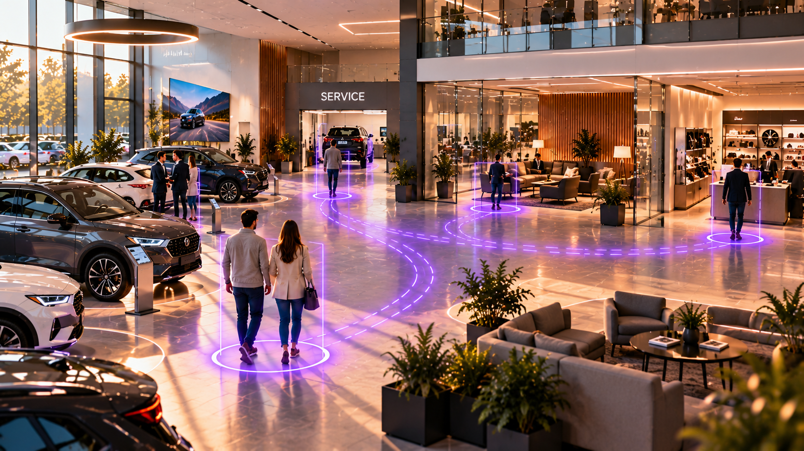
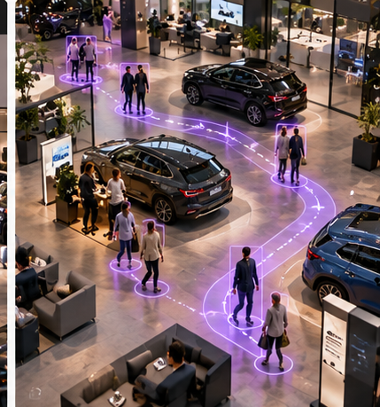
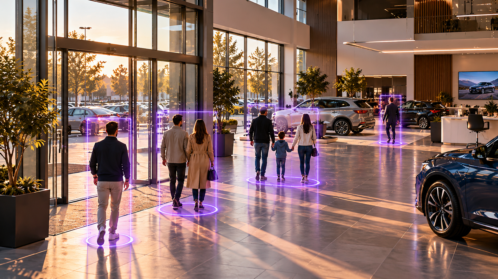
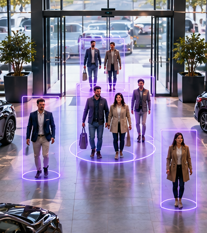

AUTOMOTIVE / CONTEXT 01 / 10
Identify contact gaps. Respond. Evaluate what changes.
Give the dealer a practical view of where contact opportunities are missed, when staff coverage is stretched and how model exploration progresses towards registered follow-up.
PFM combines measurement design, operational insight and dealer reviews. Commercial improvement is the goal; demonstrated results require a baseline and comparable follow-up.

AUTOMOTIVE / MEASURE 02 / 10
A reliable baseline starts at the entrance.
Count entries and exits at each selected entrance and time window. Distinguish people, repeat crossings and derived visits. Group detection is a separate analysis that requires validation.
Proposed entrance options: Xovis or Milesight. Product selection, coverage and staff exclusion require a site assessment.

AUTOMOTIVE / UNDERSTAND 03 / 10
Showroom, service and reception each have a distinct role.
Show which defined zones are reached and how journeys continue. Reaching a service zone identifies a destination; it does not establish why someone entered.
A confirmed service purpose requires additional appointment or registration data. Keep mixed-purpose and unknown visits visible.

AUTOMOTIVE / UNDERSTAND 04 / 10
Explore the route through the showroom.
Follow transitions between model zones within validated measurement coverage. Show which combinations occur, without presenting a route as personal preference or purchase intent.
Proposed deeper analysis: LiDAR or a suitable Xovis 3D configuration. Sensor handover, obstructions and sight lines require validation.

AUTOMOTIVE / UNDERSTAND 05 / 10
See model dwell patterns and identify where to investigate.
Compare zone reach and dwell time to test model placement and campaign focus. A configured dwell threshold can flag a contact opportunity; it does not establish purchase intent.
Define zone boundaries, minimum dwell time, return visits and passing trajectories before showing model comparisons.
AUTOMOTIVE / UNDERSTAND 06 / 10
Make potential contact gaps visible while there is still time to respond.
Separate qualifying visits with contact, visitors still present without contact and completed visits without a detected contact indicator. Use these groups to investigate coverage and improve the greeting process.
Qualifying means a validated dwell rule, not a proven buyer. Contact requires validated staff distinction and proximity/duration rules; no detected signal does not prove no conversation occurred.

AUTOMOTIVE / UNDERSTAND 07 / 10
From the showroom floor to the next observable step.
Measure presence in the agreed desk zone and examine progression after contact signals. Sitting at a desk does not prove a quotation, lead or sale.
A contact-to-desk rate requires the same valid trajectories and observation period. A quotation requires a separate CRM or DMS record.

AUTOMOTIVE / PROVE 08 / 10
Connect showroom patterns with marketing and registered follow-up.
Compare campaign dates, visit volumes, model-zone dwell and contact coverage. Add CRM/DMS leads, quotations and orders to review the process with the dealer.
Keep source periods, channels and definitions aligned. Without valid visit-cohort linkage, CRM totals remain separate series. Campaign association is not proof of campaign impact.

AUTOMOTIVE / CONFIGURE 09 / 10
Start small, with clear dependencies.
Select entrance counting, showroom zones, validated staff distinction and an alert workflow. Add staffing schedules, campaign calendars and permitted CRM/DMS links where the chosen question needs them.
Phone or smartwatch alerts are available according to supplied product input, subject to a compatible delivery channel, configured rule and operational ownership. No notification or integration is triggered by this review.
AUTOMOTIVE / ACT 10 / 10
Agree the response, the owner and the evidence of change.
Test a greeting alert, adjust peak-hour coverage or review campaign follow-up. PFM and the dealer agree a baseline, action owner and evaluation date, then compare contact and commercial indicators.
Compare matched periods and sufficiently mature cohorts, accounting for channel mix, staffing and seasonality. Describe observed change first; claim impact only when the evaluation supports it. System actions in this review are simulated.
WHAT DO WE GET?
An illustrative showroom performance view for daily prioritisation and dealer review.
Northstar Retail Group | Showroom A | 5 Nov 2026 | 09:00-14:05 CET | Illustrative snapshot
68 qualifying visits = 40 with contact + 22 departed without a detected contact signal + 6 still present without a detected contact signal. Contact coverage = 40 / 68 = 58.8%, rounded to 59%.
Model zone 4: dwell 2m 05s, no detected contact signal. Example alert threshold: 90s. Route to a configured phone or smartwatch; no message is sent here.
7 quotations | 3 orders. Illustrative registrations during the reporting day. These are separate totals, not conversions from today’s visit cohort.
Unit: deduplicated person-visits, not groups or identified people. Qualifying: at least 60 seconds in a model zone; example rule, not buying intent. Contact: validated staff-contact indicator.
Fictional output specimen inspired by the supplied dashboard; the values are independently created fixtures. No customer data, benchmark, live feed or guaranteed product screen. CRM snapshot: 14:00 CET; physical snapshot: 14:05 CET.
FROM INSIGHT TO ACTION
Operational alerts and structured dealer reviews turn measurement into a repeatable improvement process.
A configured dwell-without-contact rule can trigger a phone or smartwatch notification. Assign an available recipient, acknowledge the alert, provide cover and review the response.
Product input: alerts are already possible. Confirm channel compatibility, staff distinction, zones, latency, repeat-alert suppression and escalation for the selected deployment. This example is simulated.Use busy time windows, time to first contact and zone dwell to choose a staffing or layout experiment. Give the action an owner and compare the same definitions before and after.
Keep visits without a contact signal visible. Interpret time to contact among contacted visits separately. A longer model dwell is not proven interest.Combine campaign calendars, channel tags and approved CRM/DMS records with aggregate showroom patterns. Review whether visits, model dwell, contacts and registered follow-up change together.
Use consented or otherwise permitted linkage, deduplication and a fixed outcome horizon. Without linkage, compare aggregate series; do not attribute individual orders or claim causal uplift.Agree a baseline, action log and review date. Demonstrated results require comparable evidence; increased sales, ROI and payback are not promised.
OPTIONAL EXPLORATION / MOBILE & GEO
Add origin areas, brand-related visitation patterns and aggregate visits to other showrooms when a suitable source supports the analysis. These describe a panel or modelled population, not every visitor counted at the entrance.
Use aggregate origin areas with the source population, period and area definition visible. Do not link an individual origin to a sensor trajectory.
Visits to brand-related locations are a contextual signal. The term brand affinity requires an explicit provider definition; it does not establish preference, ownership or purchase intent.
Availability, representativeness, minimum counts and location attribution must be confirmed with the data provider. This proposal therefore contains no map or fictional percentages for this analysis.
The existing brochure has not been changed. No customer results, prices, uplift, benchmarks or live system actions have been added to this proposal.
The scenes show a proposed selection for review. All images below remain candidates. Purple markers are conceptual and do not prove sensor coverage, identity or measurement performance.






The supplied street image with pedestrians outside a shop is excluded from Automotive: it depicts Retail and does not support this showroom story.